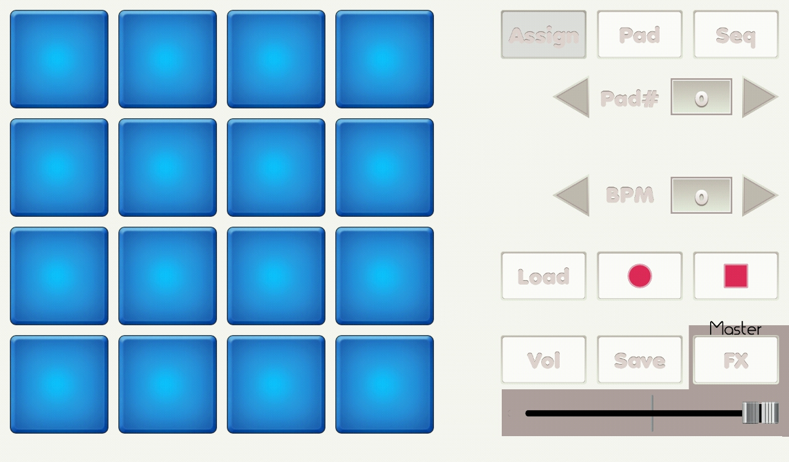

{% include JB/setup %}
Assign screen

- Pads: read you to load file screen.
- Pad button: change it to pad/free_play mode.
- Seq button: change it to sequence mode.
- Pad# arrows: disabled.
- BPM arrows: disabled.
- Load button: read you to load project screen.
- Rec button: disabled.
- Rec stop button: disabled.
- Vol button: read you to volume screen.
- Save button: read you to save screen.
- FX button: read you to filter screen.
- Volume slider: master volume.